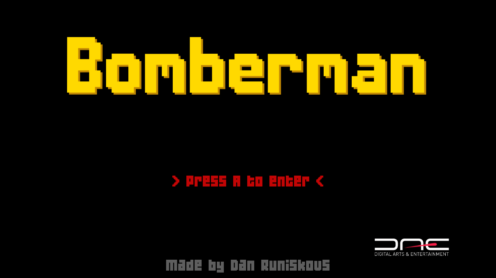
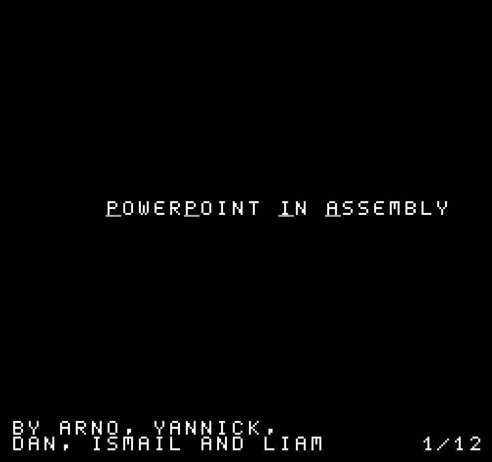
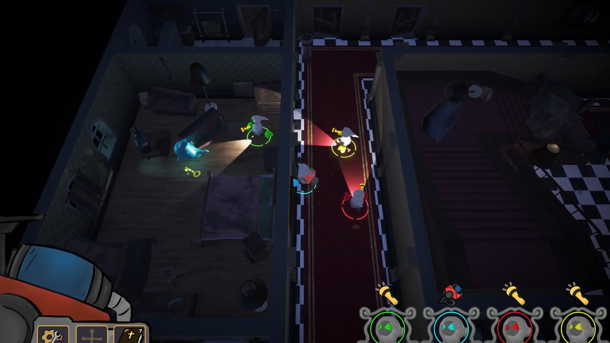
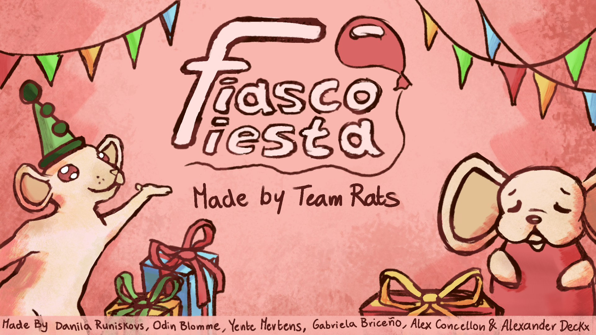

01C++ / SDL3 / MINIGIN
Bomberman
Un moteur 2D maison basé sur un système d’entités et de composants, mis en pratique. Le gameplay classique de Bomberman en solo, en coopération et en JcJ.
DÉVELOPPEUR DE JEUX & PROGRAMMEUR C++ / C#
Je fais fonctionner les choses
Je programme en C++ et en C# et je crée des jeux. Je m’intéresse aussi aux systèmes embarqués et aux logiciels qui peuvent être utiles au quotidien.
Découvrir mes projets01 / SÉLECTION DE PROJETS

01C++ / SDL3 / MINIGIN
Un moteur 2D maison basé sur un système d’entités et de composants, mis en pratique. Le gameplay classique de Bomberman en solo, en coopération et en JcJ.

02ASSEMBLEUR 6502 / NES
Un outil de diaporama pour la NES, et ma première expérience de programmation en assembleur.

03UNITY / C# / COOP LOCALE
Un hôtel hanté, un aspirateur à améliorer et quatre amis qui essaient de s’en sortir ensemble.

04UNITY / C# / COOP LOCALE
Un party game multijoueur local chaotique, créé en trois jours lors de la game jam Xbox Game Camp Belgium.